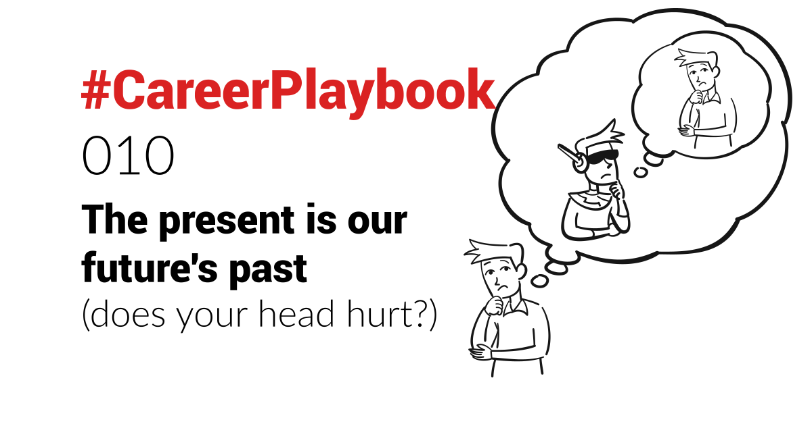

What will your future self think of the present you?
For a lot of business or personal decisions, I project myself in the future, looking at the present as being my past.
And I ask myself:
"What will I want my past to be?"
"How will I feel about my present self?"
" Will I regret this decision?"
This is what drove me to
- quit a successful job in Paris and move to London with just a backpack
- quit a well-paid job to start my own startup (ultimately sold successfully)
- leave London and move to the German countryside
- and more
Each time pushing me outside my comfort zone, but thinking that my future self would have regretted my present self not giving it a shot.
I find it a great way to think about things, and it helps make small or big decisions - both professional and family-related.
It's similar to how Jeff Bezos  describes his "Regret Minimisation Framework", though it sounds more scientific... and has not worked for me as well so far! :)
Life as a book
Another way to think about it - and at the risk of losing you - let me get cheesy for a second: your life is a book that you are writing one sentence at a time. One page at a time. One chapter at a time.
So the question I'm asking myself is: when I read the book of my life, at the end of it, what will I want to read?
And then making decisions based on what my future self will want to read.
Dealing with tough times
Furthermore, that outlook helps a lot getting through tough times - which happen a lot in life in general, and especially in #startups.
Whatever challenge or difficult time I'm going through, ultimately it will only be a page out of many in the book of my life (take that as an allegory - I am not planning to write an autobiography!).
Perhaps even just a paragraph, or a sentence.
A very small moment in time.
From which I will be able to learn something, even if it is not clear yet what. I'll have to write and read those learnings later.
It helps to see things in the bigger picture.
Working in Technology
When you love Technology, and work in it, it is also a very helpful mindset.
Technology grows fast. So when seeing a technology solution today, it is essential to see it as a the past of what the future could bring.
Especially when building it and selling it (so you can paint a vision of how it will evolve and change things), investing in it, or simply theorising and discussing about it.
Do you think about things that way too?